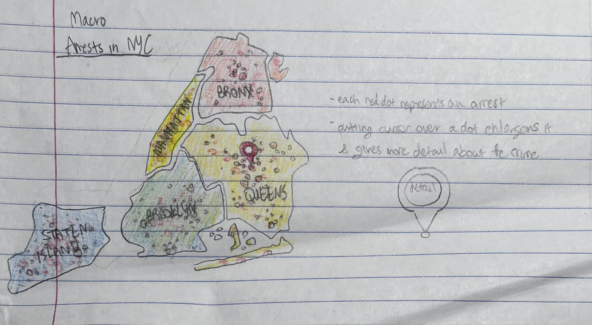
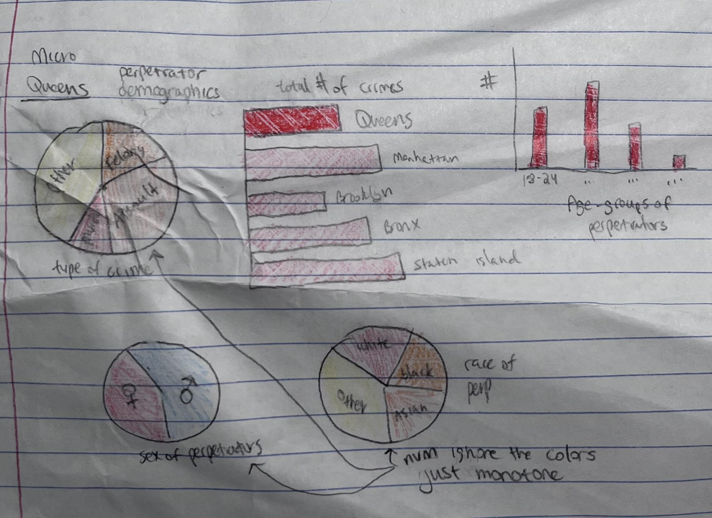

Arrests Demographics in NYC, 2023
{% include 'navbar.html' %}
Every year, thousands of people are arrested in NYC alone. This project seeks to map the arrests that occurred by NYPD in 2023, providing details about the perpetrator and the crime. Using this data, and with the help of infographics, an accurate representation of crime rates in each borrow can be conveyed and compared.
Data cleansing
- A data set was downloaded from NYC OpenData.
- Google sheets was used to remove columns of unneccessary data that the general public would not understand, like law codes.
- A useful dicionary-based data structure was designed in order to make all necessary data organized and accessible.
- A python program (format_data.py) was created to read the .csv line-by-line to create and save the dictionary as a .json file.
Vocabulary
- Felony: most serious type of criminal offense and carry possible sentences anywhere from a year to life in prison.
- Misdemeanor: more serious than violations but less severe than felonies, can carry up to a year in jail.
- Violation: petty offenses that are typically punishable by fines, but not jail time.
Macro

- Readability: the macro-summary shows map of all the boroughs in NYC and signifies each arrest with a dot, which is easy to understand and makes it easy for users to see the bigger picture.
- Simplicity: each arrest is just a dot until you click on it, which will then give more details.
Micro

- Readability: the details about the crime and the perpetrator are represented by pie graphs and bar charts, which is intuitive and easy to understand. The overall number of crime is shown in another bar chart with all the boroughs, allowing users to easily compare.
- Simplicity: No more than 5 different sections or bars for every chart.
Feedback & Takeaways:
- Specify the timeline of the data - 2023
- Unclear message
- A way to compare one borough to the average crime rate - Using the bar graph of crime between all the boroughs, a line of average can be drawn
- Too many dots, add a way to sort the dots - Felonies, misdemeanors, and violations